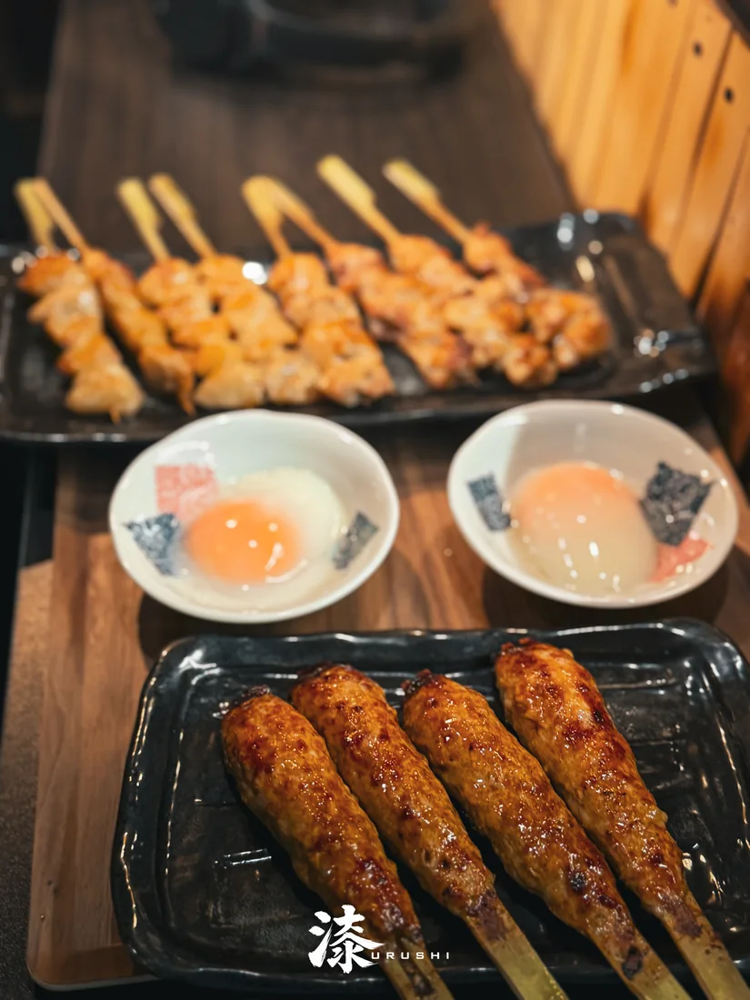
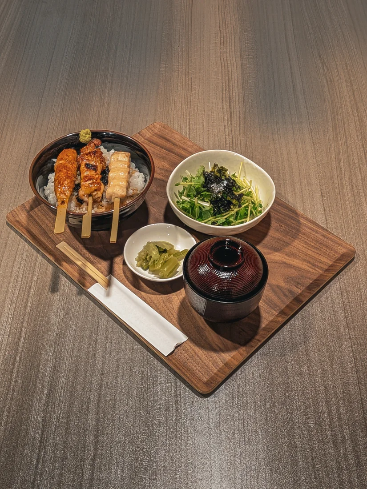
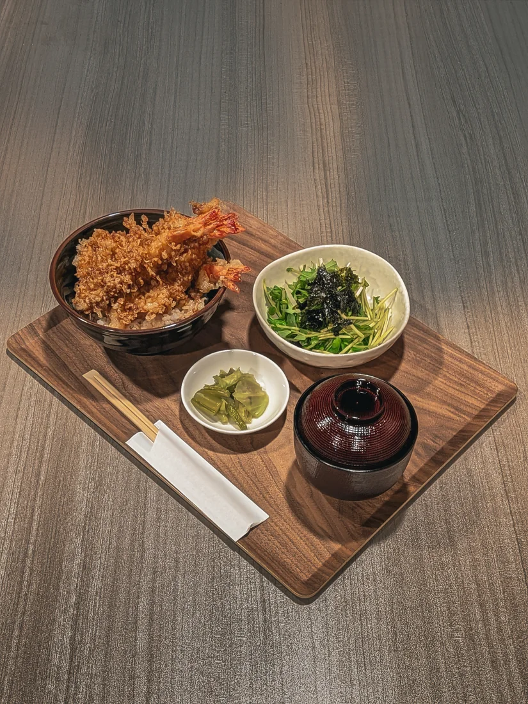
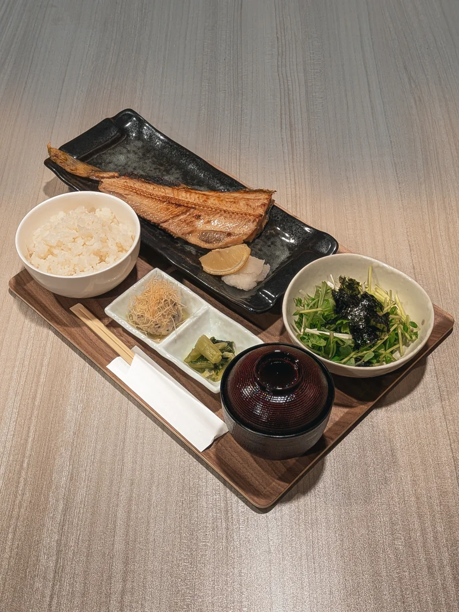
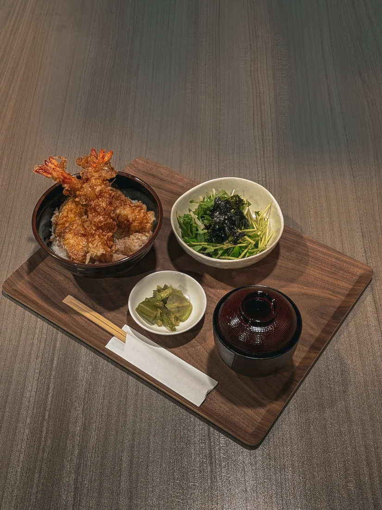

もも
Chicken Thigh
ジューシーな定番の一本
OUR CRAFT
炭の香り、焼き上がる音、立ちのぼる湯気。焼鳥漆では、鶏の部位ごとの持ち味を見極め、一本ずつ炭火で焼き上げます。
定番の焼鳥から、揚げ物、丼、旬の和食まで。気軽な一杯にも、ゆっくり過ごす夜にも寄り添う一皿をご用意しています。

炭火焼き
LUNCH & DINNER
焼鳥丼、天丼、焼魚定食など、しっかり味わえるお食事もご用意しています。




VISIT US